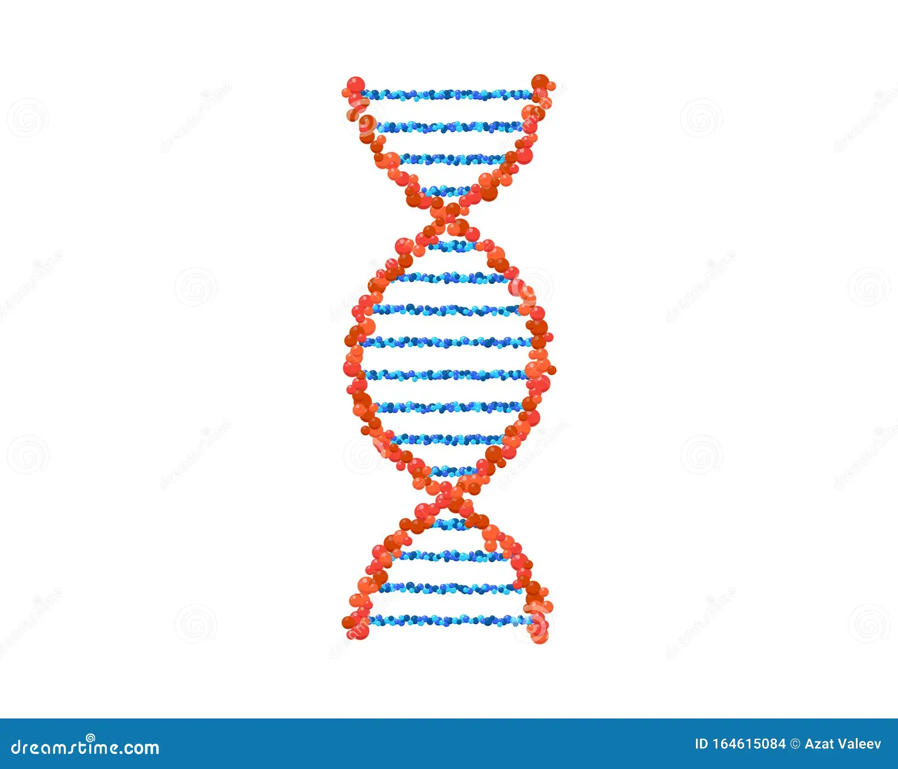
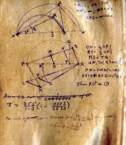

DNA Spirals
The double helix of DNA demonstrates nature’s geometric patterns, where π plays a hidden role in the structure.

Ripples & Waves
Waves in water and sound often form circular patterns that require π to describe mathematically.

Cosmic Orbits
Planetary orbits, black holes, and satellite trajectories all rely on π for precise calculations.

Ancient History
Ancient civilizations like the Egyptians and Babylonians approximated π for building pyramids and astronomical calculations.

Quantum Physics
π appears in the Heisenberg uncertainty principle and other formulas that describe the smallest scales of reality.

Pi in Culture
π has inspired art, music, poetry, and even coding challenges, reflecting humanity’s fascination with this constant.